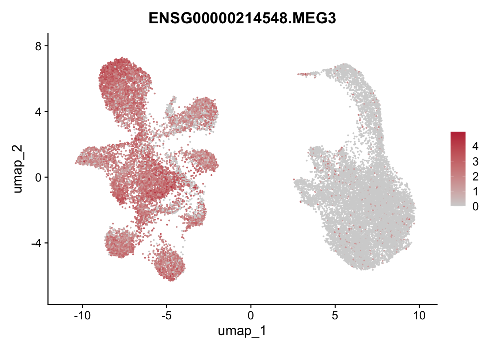
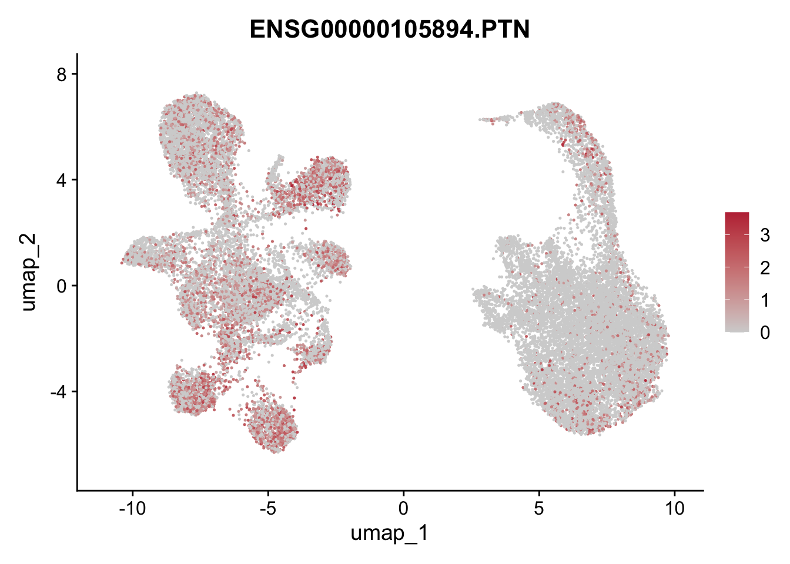
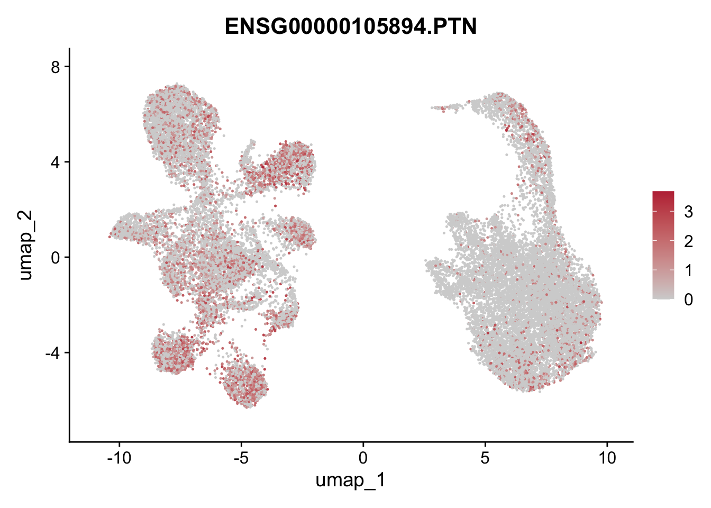

Fibroblast GSEA Nature validation
EP
2025-10-04
Last updated: 2025-10-05
Checks: 5 2
Knit directory: Cardiac Sarcoidosis/
This reproducible R Markdown analysis was created with workflowr (version 1.7.2). The Checks tab describes the reproducibility checks that were applied when the results were created. The Past versions tab lists the development history.
The R Markdown is untracked by Git. To know which version of the R
Markdown file created these results, you’ll want to first commit it to
the Git repo. If you’re still working on the analysis, you can ignore
this warning. When you’re finished, you can run
wflow_publish to commit the R Markdown file and build the
HTML.
Great job! The global environment was empty. Objects defined in the global environment can affect the analysis in your R Markdown file in unknown ways. For reproduciblity it’s best to always run the code in an empty environment.
The command set.seed(20251004) was run prior to running
the code in the R Markdown file. Setting a seed ensures that any results
that rely on randomness, e.g. subsampling or permutations, are
reproducible.
Great job! Recording the operating system, R version, and package versions is critical for reproducibility.
Nice! There were no cached chunks for this analysis, so you can be confident that you successfully produced the results during this run.
Using absolute paths to the files within your workflowr project makes it difficult for you and others to run your code on a different machine. Change the absolute path(s) below to the suggested relative path(s) to make your code more reproducible.
| absolute | relative |
|---|---|
| ~/Documents/Github/Cardiac Sarcoidosis/data/Merged/Sarcoidosis_vs_DonorHeart_v2.rds | data/Merged/Sarcoidosis_vs_DonorHeart_v2.rds |
Great! You are using Git for version control. Tracking code development and connecting the code version to the results is critical for reproducibility.
The results in this page were generated with repository version 6ae5a3a. See the Past versions tab to see a history of the changes made to the R Markdown and HTML files.
Note that you need to be careful to ensure that all relevant files for
the analysis have been committed to Git prior to generating the results
(you can use wflow_publish or
wflow_git_commit). workflowr only checks the R Markdown
file, but you know if there are other scripts or data files that it
depends on. Below is the status of the Git repository when the results
were generated:
Ignored files:
Ignored: .DS_Store
Ignored: .Rhistory
Ignored: .Rproj.user/
Ignored: R/
Ignored: analysis/.DS_Store
Ignored: data/Merged/
Untracked files:
Untracked: .gitignore.gitignore
Untracked: Fibroblast-GSEA-Nature-Validation_files/
Untracked: analysis/Cellchat_Sarcoidosis_v3.Rmd
Untracked: analysis/Fibroblast_GSEA_Nature_Validation.Rmd
Untracked: analysis/Sarcoidosis_ClusterAnnotations.Rmd
Untracked: analysis/Sarcoidosis_GREM2.Rmd
Untracked: analysis/Sarcoidosis_Subanalysis.Rmd
Untracked: analysis/Sarcoidosis_allClusters_Validation_Nature.Rmd
Untracked: analysis/old files/
Untracked: code/gitignore
Unstaged changes:
Modified: analysis/index.Rmd
Note that any generated files, e.g. HTML, png, CSS, etc., are not included in this status report because it is ok for generated content to have uncommitted changes.
There are no past versions. Publish this analysis with
wflow_publish() to start tracking its development.
[1] "data/Merged/Sarcoidosis_vs_DonorHeart_v2.rds"
49601 UMAP
colclusterName <- c("#f4a582", "#FEE08B", "#3288BD", "#253494", "#01665e", "#66C2A5", "#355C7D", "#a6bddb", "#fde0dd", "#dd1c77")
names(colclusterName) <- c("CM", "Fb1","PeriFb", "VSMC", "BEC1","BEC2", "NC1", "TRM", "inflMph","Lymphocytes")
seuratM$clusterName <- factor(seuratM$clusterName, levels=c("CM", "Fb1", "PeriFb", "VSMC", "BEC1","BEC2", "NC1", "TRM", "inflMph","Lymphocytes"))
Idents(seuratM) <- seuratM$clusterName
DimPlot(seuratM, reduction = "umap",label = TRUE, cols = colclusterName, repel = TRUE, pt.size = 0.01)
seuratFb <- subset (seuratM, clusterName %in% c("Fb1", "PeriFb", "VSMC"))
table(seuratFb$orig.ident)
24740 table(seuratFb$pat_sub)
DonorHeart Sarcoidosis
19792 4948 Reembedding
Fibroblast annotation
Idents (seuratFb) <- seuratFb$RNA_snn_res.0.3
DimPlot(seuratFb, reduction = "umap", pt.size = 0.1, label = TRUE)seuratFb$clusterName <- "clusterName"
Idents(seuratFb) <- seuratFb$clusterName
seuratFb$clusterName[which(seuratFb$RNA_snn_res.0.3 %in% "0" )] <- "PeriFb1"
seuratFb$clusterName[which(seuratFb$RNA_snn_res.0.3 %in% "1" )] <- "PDGFRAhigh Fb1"
seuratFb$clusterName[which(seuratFb$RNA_snn_res.0.3 %in% "2" )] <- "PDGFRAlow Fb1"
seuratFb$clusterName[which(seuratFb$RNA_snn_res.0.3 %in% "3" )] <- "PeriFb2"
seuratFb$clusterName[which(seuratFb$RNA_snn_res.0.3 %in% "4" )] <- "VSMC"
seuratFb$clusterName[which(seuratFb$RNA_snn_res.0.3 %in% "5" )] <- "PDGFRAlow Fb2"
seuratFb$clusterName[which(seuratFb$RNA_snn_res.0.3 %in% "6" )] <- "PDGFRAhigh Fb2"
seuratFb$clusterName[which(seuratFb$RNA_snn_res.0.3 %in% "7" )] <- "CD34 high Fb"
seuratFb$clusterName[which(seuratFb$RNA_snn_res.0.3 %in% "8" )] <- "PDGFRAlow VCAN high"
seuratFb$clusterName[which(seuratFb$RNA_snn_res.0.3 %in% "9" )] <- "PI16 high Fb"
seuratFb$clusterName[which(seuratFb$RNA_snn_res.0.3 %in% "10" )] <- "PDGFRAlow CD81high"
colFb <- c("#e5f5f9", "#99d8c9", "#2ca25f", "#ffffb2", "#fed976", "#feb24c", "#fdbb84","#fd8d3c", "#ef6548", "#b30000", "#7f0000")
names(colFb) <- c("PeriFb1", "PeriFb2", "VSMC", "PDGFRAhigh Fb1", "PDGFRAhigh Fb2", "PDGFRAlow Fb1", "PDGFRAlow Fb2", "PDGFRAlow VCAN high", "PDGFRAlow CD81high", "CD34 high Fb", "PI16 high Fb")
colpat_sub<- c("#355C7D", "#dfc27d")
names(colpat_sub) <- c("DonorHeart", "Sarcoidosis")
seuratFb$clusterName <- factor(seuratFb$clusterName, levels = c("PeriFb1", "PeriFb2", "VSMC", "PDGFRAhigh Fb1", "PDGFRAhigh Fb2", "PDGFRAlow Fb1", "PDGFRAlow Fb2", "PDGFRAlow VCAN high", "PDGFRAlow CD81high", "CD34 high Fb", "PI16 high Fb"))
Idents(seuratFb) <- seuratFb$clusterName
DimPlot(seuratFb, reduction = "umap", cols = colFb, pt.size = 0.1, label =F)#Idents(seuratFb) <- seuratFb$clusterName
#DimPlot(seuratFb, reduction = "umap", cols = colFb, pt.size = 0.1, label =T, repel = T)Dotplot with marker genes
Dotplot with Genes from Nature paper IL33 feedforward
gene_list <- rev(c("IL33","LIFR", "OSMR", "IL1R1", "IL6ST", "IL1RAP", "CCL11", "IL1B", "OSM", "IL1RL1"))
seuratM$clusterName <- factor(seuratM$clusterName, levels = c("PeriFb1", "PeriFb2", "VSMC", "PDGFRAhigh Fb1", "PDGFRAhigh Fb2", "PDGFRAlow Fb1", "PDGFRAlow Fb2", "PDGFRAlow VCAN high", "PDGFRAlow CD81high", "CD34 high Fb", "PI16 high Fb"))
DotPlot(data_conv, features = gene_list, group.by= "clusterName") + RotatedAxis() + scale_color_viridis(option="T") + coord_flip() + ggtitle("Celltype assignment" + theme(axis.text.y = element_text(size = 10)))Violin Plots (VlnPlots) Il33 and OSMR
VlnPlot(seuratFb, features = "ENSG00000137033.IL33", pt.size = 0.5, group.by ="clusterName") + scale_fill_manual(values = colFb) + ggtitle ("IL33")
VlnPlot(seuratFb, features = "ENSG00000145623.OSMR", pt.size = 0.5, group.by ="clusterName") + scale_fill_manual(values = colFb) + ggtitle ("OSMR")VlnPlot(seuratFb, features = "ENSG00000137033.IL33", pt.size = 0.5, group.by ="clusterName") +
scale_fill_manual(values = colFb) + ggtitle ("IL33")VlnPlot(seuratFb, features = "ENSG00000113594.LIFR", pt.size = 0.5, group.by ="clusterName") +
scale_fill_manual(values = colFb) + ggtitle ("LIFR")VlnPlot(seuratFb, features = "ENSG00000134352.IL6ST", pt.size = 0.5, group.by ="clusterName") +
scale_fill_manual(values = colFb) + ggtitle ("IL6ST")
VlnPlot(seuratFb, features = "ENSG00000115594.IL1R1", pt.size = 0.5, group.by ="clusterName") +
scale_fill_manual(values = colFb) + ggtitle ("IL1R1")VlnPlot(seuratFb, features = "ENSG00000196083.IL1RAP", pt.size = 0.5, group.by ="clusterName") +
scale_fill_manual(values = colFb) + ggtitle ("IL1RAP")VlnPlot(seuratFb, features = "ENSG00000172156.CCL11", pt.size = 0.5, group.by ="clusterName") +
scale_fill_manual(values = colFb) + ggtitle ("CCL11")VlnPlots BMP Family
genes <- data.frame(gene=rownames(seuratFb)) %>%
mutate(geneID=gsub("^.*\\.", "", gene))
selGenes <- data.frame(geneID=c("HGF", "MET", "GREM1", "GREM2", "BMPR1A", "BMPR2", "BMP2K", "BMP8A", "BMP1", "BMP6", "BMP2", "BMP4", "BMP5", "BMP7")) %>%
left_join(., genes, by="geneID")
Idents(seuratFb) <- seuratFb$clusterName
pList <- sapply(selGenes$gene, function(x){
p <- VlnPlot( object = seuratFb, features = x, pt.size = 0.5, cols=colFb)
plot(p)
})
Relative abundance of fibroblasts per condition
datList <- NULL
for(con in unique(seuratFb$pat_sub)){
seuratSub <- subset(seuratFb, pat_sub==con)
print(dim(seuratSub))
dat_con <- as.data.frame(table(seuratSub$clusterName)) %>%
mutate(percent=Freq/ncol(seuratSub)) %>% mutate(diseaseCond=con)
datList[[con]] <- dat_con
}[1] 44729 19792
[1] 44729 4948dat_all <- do.call("rbind", datList)
order_patsub <- c("DonorHeart", "Sarcoidosis")
ggbarplot(dat_all, x = "diseaseCond", y = "percent", fill = "Var1", palette = colFb, legend = "right", legend.titel = "cluster", xlab = "condition", ylab = "frequency") +
theme(axis.text.x = element_text(angle = 90, vjust = 0.5, hjust=1)) +
scale_x_discrete(limits = order_patsub)Relative abundance of fibroblasts per patient
datList <- NULL
for(con in unique(seuratFb$patient)){
seuratFbSub <- subset(seuratFb, patient==con)
print(dim(seuratFbSub))
dat_con <- as.data.frame(table(seuratFbSub$clusterName)) %>%
mutate(percent=Freq/ncol(seuratFbSub)) %>% mutate(patient=con)
datList[[con]] <- dat_con
}[1] 44729 1880
[1] 44729 668
[1] 44729 1621
[1] 44729 2067
[1] 44729 2181
[1] 44729 2910
[1] 44729 4856
[1] 44729 889
[1] 44729 1049
[1] 44729 403
[1] 44729 1268
[1] 44729 1978
[1] 44729 636
[1] 44729 84
[1] 44729 1154
[1] 44729 1096dat_all <- do.call("rbind", datList)
#head(dat_all)
patient_order <- c("Donor Heart 01", "Donor Heart 02", "Donor Heart 03", "Donor Heart 04", "Donor Heart 05", "Donor Heart 06", "Donor Heart 07", "Donor Heart 08", "Donor Heart 09", "Donor Heart 10", "Donor Heart 11", "Sarcoidosis 01", "Sarcoidosis 02", "Sarcoidosis 03", "Sarcoidosis 04", "Sarcoidosis 05")
#View(dat_all)
#write.table(dat_all, file= "~/Documents/01 Projects/00 snRNAseq/01 Myocarditis snRNAseq/docs/Markers", sep = "\t",quote=F,row.names=T,col.names=T)
dat_all$patient <- factor(dat_all$patient, levels = patient_order)
ggbarplot(dat_all, x= "patient", y= "percent", fill = "Var1", legend = "right", legend.titel = "cluster", ylab = "frequency", palette = colFb) + theme(axis.text.x = element_text(angle = 90, vjust = 0.5, hjust=1))Fb Counts
## total Fb count for all conditions
table(seuratFb$orig.ident)
24740 ## Clusters per condition
table(seuratFb$clusterName, seuratFb$pat_sub)
DonorHeart Sarcoidosis
PeriFb1 6574 967
PeriFb2 2436 273
VSMC 1253 333
PDGFRAhigh Fb1 3699 92
PDGFRAhigh Fb2 1075 6
PDGFRAlow Fb1 3592 67
PDGFRAlow Fb2 40 1462
PDGFRAlow VCAN high 64 726
PDGFRAlow CD81high 13 440
CD34 high Fb 1015 7
PI16 high Fb 31 575Fb subtype relative abundance per condition
seuratFb$pat_sub <- factor(seuratFb$pat_sub, levels = c("DonorHeart", "Sarcoidosis"))
colpat_sub <- c("DonorHeart" = "#355C7D", "Sarcoidosis" = "#dfc27d")
dat_counts <- seuratFb@meta.data %>%
group_by(patient_pat_sub, pat_sub, clusterName) %>%
summarise(cnt = n(), .groups = "drop")
dat_totals <- seuratFb@meta.data %>%
group_by(patient_pat_sub) %>%
summarise(total_cells = n(), .groups = "drop")
dat_rel <- dat_counts %>%
left_join(dat_totals, by = "patient_pat_sub") %>%
mutate(rel_abundance = cnt / total_cells)
pvals <- dat_rel %>%
group_by(clusterName) %>%
summarise(p_val = wilcox.test(rel_abundance ~ pat_sub)$p.value) %>%
mutate(p_label = sprintf("p = %.3f", p_val))
y_max <- dat_rel %>%
group_by(clusterName) %>%
summarise(y_pos = max(rel_abundance))
pvals <- left_join(pvals, y_max, by = "clusterName")
ggbarplot(dat_rel,
x = "clusterName",
y = "rel_abundance",
fill = "pat_sub",
palette = colpat_sub,
add = c("mean_se"),
position = position_dodge(0.8),
xlab = "Cluster (Cell type)",
ylab = "Relative abundance",
legend.title = "Condition") +
theme_classic() + theme(axis.text.x = element_text(angle = 90, vjust = 0.5, hjust = 1)) +
ggrepel::geom_text_repel(data = pvals, aes(x = clusterName, y = y_pos * 1.05, label = p_label), inherit.aes = FALSE,
size = 3, direction = "y",nudge_y = 0.01, segment.size = 0.2, box.padding = 0.5, point.padding = 0.5)Fb Feature Plots
 

FeaturePlots IL33 axis projected onto GSEA
FeaturePlot(seuratFb, features = "ENSG00000145623.OSMR", pt.size = 1, cols = c("lightgrey", "#BE3144"))
FeaturePlot(seuratFb, features = "ENSG00000115602.IL1RL1", pt.size = 1, cols = c("lightgrey", "#BE3144"))FeaturePlot(seuratFb, features = "ENSG00000137033.IL33", pt.size = 1, cols = c("lightgrey", "#BE3144"))FeaturePlot(seuratFb, features = "ENSG00000145623.OSMR", pt.size = 1, cols = c("lightgrey", "#BE3144"))FeaturePlot(seuratFb, features = "ENSG00000113594.LIFR", pt.size = 1, cols = c("lightgrey", "#BE3144"))
FeaturePlot(seuratFb, features = "ENSG00000134352.IL6ST", pt.size = 1, cols = c("lightgrey", "#BE3144"))FeaturePlot(seuratFb, features = "ENSG00000115594.IL1R1", pt.size = 1, cols = c("lightgrey", "#BE3144"))FeaturePlot(seuratFb, features = "ENSG00000196083.IL1RAP", pt.size = 1, cols = c("lightgrey", "#BE3144"))FeaturePlot(seuratFb, features = get_full_gene_name("CCL11",seuratM) , pt.size = 1, cols = c("lightgrey", "#BE3144"))Feature Plots of BMP Family
genes <- data.frame(gene=rownames(seuratFb)) %>%
mutate(geneID=gsub("^.*\\.", "", gene))
selGenes <- data.frame(geneID=c("HGF", "MET", "GREM1", "GREM2", "BMPR1A", "BMPR2", "BMP2K", "BMP8A", "BMP1", "BMP6", "BMP2", "BMP4", "BMP5", "BMP7")) %>%
left_join(., genes, by="geneID")
pList <- sapply(selGenes$gene, function(x){
p <- FeaturePlot(seuratFb, features = x,
reduction = "umap", pt.size = 0.1,
cols = c("lightgrey", "#BE3144"),
raster = FALSE) +
theme(legend.position="right")
plot(p)
})
sessionInfo()R version 4.4.2 (2024-10-31)
Platform: aarch64-apple-darwin20
Running under: macOS Sequoia 15.6.1
Matrix products: default
BLAS: /Library/Frameworks/R.framework/Versions/4.4-arm64/Resources/lib/libRblas.0.dylib
LAPACK: /Library/Frameworks/R.framework/Versions/4.4-arm64/Resources/lib/libRlapack.dylib; LAPACK version 3.12.0
locale:
[1] en_US.UTF-8/en_US.UTF-8/en_US.UTF-8/C/en_US.UTF-8/en_US.UTF-8
time zone: Europe/Zurich
tzcode source: internal
attached base packages:
[1] grid stats4 stats graphics grDevices utils datasets methods base
other attached packages:
[1] magrittr_2.0.4 future_1.67.0 workflowr_1.7.2
[4] pathview_1.46.0 wordcloud_2.6 textshaping_1.0.3
[7] EnhancedVolcano_1.24.0 ggrepel_0.9.6 RColorBrewer_1.1-3
[10] NCmisc_1.2.0 VennDiagram_1.7.3 futile.logger_1.4.3
[13] ggupset_0.4.1 gridExtra_2.3 DOSE_4.0.1
[16] enrichplot_1.26.6 msigdbr_25.1.1 org.Hs.eg.db_3.20.0
[19] AnnotationDbi_1.68.0 clusterProfiler_4.14.6 multtest_2.62.0
[22] metap_1.12 scater_1.34.1 scuttle_1.16.0
[25] destiny_3.20.0 circlize_0.4.16 muscat_1.20.0
[28] viridis_0.6.5 viridisLite_0.4.2 lubridate_1.9.4
[31] forcats_1.0.1 stringr_1.5.2 purrr_1.1.0
[34] readr_2.1.5 tidyr_1.3.1 tibble_3.3.0
[37] tidyverse_2.0.0 dplyr_1.1.4 SingleCellExperiment_1.28.1
[40] SummarizedExperiment_1.36.0 Biobase_2.66.0 GenomicRanges_1.58.0
[43] GenomeInfoDb_1.42.3 IRanges_2.40.1 S4Vectors_0.44.0
[46] BiocGenerics_0.52.0 MatrixGenerics_1.18.1 matrixStats_1.5.0
[49] pheatmap_1.0.13 ggpubr_0.6.1 ggplot2_4.0.0
[52] Seurat_5.3.0 SeuratObject_5.2.0 sp_2.2-0
loaded via a namespace (and not attached):
[1] graph_1.84.1 igraph_2.1.4 ica_1.0-3
[4] plotly_4.11.0 Formula_1.2-5 zlibbioc_1.52.0
[7] tidyselect_1.2.1 bit_4.6.0 doParallel_1.0.17
[10] clue_0.3-66 lattice_0.22-7 rjson_0.2.23
[13] blob_1.2.4 S4Arrays_1.6.0 pbkrtest_0.5.5
[16] parallel_4.4.2 png_0.1-8 plotrix_3.8-4
[19] cli_3.6.5 ggplotify_0.1.3 goftest_1.2-3
[22] VIM_6.2.6 variancePartition_1.36.3 BiocNeighbors_2.0.1
[25] uwot_0.2.3 curl_7.0.0 mime_0.13
[28] evaluate_1.0.5 tidytree_0.4.6 ComplexHeatmap_2.22.0
[31] stringi_1.8.7 backports_1.5.0 XML_3.99-0.19
[34] lmerTest_3.1-3 qqconf_1.3.2 httpuv_1.6.16
[37] rappdirs_0.3.3 splines_4.4.2 sctransform_0.4.2
[40] ggbeeswarm_0.7.2 DBI_1.2.3 jquerylib_0.1.4
[43] smoother_1.3 withr_3.0.2 git2r_0.36.2
[46] corpcor_1.6.10 systemfonts_1.2.3 reformulas_0.4.1
[49] class_7.3-23 rprojroot_2.1.1 lmtest_0.9-40
[52] formatR_1.14 htmlwidgets_1.6.4 fs_1.6.6
[55] labeling_0.4.3 fANCOVA_0.6-1 SparseArray_1.6.2
[58] DESeq2_1.46.0 ranger_0.17.0 DEoptimR_1.1-4
[61] reticulate_1.43.0 hexbin_1.28.5 zoo_1.8-14
[64] XVector_0.46.0 knitr_1.50 ggplot.multistats_1.0.1
[67] UCSC.utils_1.2.0 RhpcBLASctl_0.23-42 timechange_0.3.0
[70] foreach_1.5.2 patchwork_1.3.2 caTools_1.18.3
[73] data.table_1.17.8 ggtree_3.14.0 R.oo_1.27.1
[76] RSpectra_0.16-2 irlba_2.3.5.1 ggrastr_1.0.2
[79] fastDummies_1.7.5 gridGraphics_0.5-1 lazyeval_0.2.2
[82] yaml_2.3.10 survival_3.8-3 scattermore_1.2
[85] crayon_1.5.3 RcppAnnoy_0.0.22 Rgraphviz_2.50.0
[88] progressr_0.16.0 later_1.4.4 ggridges_0.5.7
[91] codetools_0.2-20 GlobalOptions_0.1.2 aod_1.3.3
[94] KEGGREST_1.46.0 Rtsne_0.17 shape_1.4.6.1
[97] limma_3.62.2 estimability_1.5.1 pkgconfig_2.0.3
[100] KEGGgraph_1.66.0 TMB_1.9.17 spatstat.univar_3.1-4
[103] mathjaxr_1.8-0 getPass_0.2-4 EnvStats_3.1.0
[106] aplot_0.2.9 scatterplot3d_0.3-44 spatstat.sparse_3.1-0
[109] ape_5.8-1 xtable_1.8-4 car_3.1-3
[112] plyr_1.8.9 httr_1.4.7 rbibutils_2.3
[115] tools_4.4.2 globals_0.18.0 beeswarm_0.4.0
[118] broom_1.0.10 nlme_3.1-168 lambda.r_1.2.4
[121] assertthat_0.2.1 lme4_1.1-37 digest_0.6.37
[124] numDeriv_2016.8-1.1 Matrix_1.7-4 farver_2.1.2
[127] tzdb_0.5.0 remaCor_0.0.20 reshape2_1.4.4
[130] yulab.utils_0.2.1 glue_1.8.0 cachem_1.1.0
[133] polyclip_1.10-7 generics_0.1.4 Biostrings_2.74.1
[136] mvtnorm_1.3-3 presto_1.0.0 parallelly_1.45.1
[139] mnormt_2.1.1 statmod_1.5.0 RcppHNSW_0.6.0
[142] ScaledMatrix_1.14.0 carData_3.0-5 minqa_1.2.8
[145] pbapply_1.7-4 spam_2.11-1 gson_0.1.0
[148] gtools_3.9.5 ggsignif_0.6.4 RcppEigen_0.3.4.0.2
[151] shiny_1.11.1 GenomeInfoDbData_1.2.13 glmmTMB_1.1.12
[154] R.utils_2.13.0 RCurl_1.98-1.17 memoise_2.0.1
[157] rmarkdown_2.29 scales_1.4.0 R.methodsS3_1.8.2
[160] RANN_2.6.2 spatstat.data_3.1-8 rstudioapi_0.17.1
[163] whisker_0.4.1 cluster_2.1.8.1 mutoss_0.1-13
[166] spatstat.utils_3.2-0 hms_1.1.3 fitdistrplus_1.2-4
[169] cowplot_1.2.0 colorspace_2.1-2 rlang_1.1.6
[172] xts_0.14.1 dotCall64_1.2 ggtangle_0.0.7
[175] laeken_0.5.3 mgcv_1.9-3 xfun_0.53
[178] coda_0.19-4.1 e1071_1.7-16 TH.data_1.1-4
[181] iterators_1.0.14 emmeans_1.11.2-8 abind_1.4-8
[184] GOSemSim_2.32.0 treeio_1.30.0 ps_1.9.1
[187] futile.options_1.0.1 bitops_1.0-9 Rdpack_2.6.4
[190] promises_1.3.3 RSQLite_2.4.3 qvalue_2.38.0
[193] sandwich_3.1-1 fgsea_1.32.4 DelayedArray_0.32.0
[196] proxy_0.4-27 GO.db_3.20.0 compiler_4.4.2
[199] prettyunits_1.2.0 boot_1.3-32 beachmat_2.22.0
[202] listenv_0.9.1 Rcpp_1.1.0 edgeR_4.4.2
[205] BiocSingular_1.22.0 tensor_1.5.1 MASS_7.3-65
[208] progress_1.2.3 BiocParallel_1.40.2 babelgene_22.9
[211] spatstat.random_3.4-2 R6_2.6.1 fastmap_1.2.0
[214] multcomp_1.4-28 fastmatch_1.1-6 rstatix_0.7.2
[217] vipor_0.4.7 TTR_0.24.4 ROCR_1.0-11
[220] TFisher_0.2.0 rsvd_1.0.5 vcd_1.4-13
[223] nnet_7.3-20 gtable_0.3.6 KernSmooth_2.23-26
[226] miniUI_0.1.2 deldir_2.0-4 htmltools_0.5.8.1
[229] ggthemes_5.1.0 bit64_4.6.0-1 spatstat.explore_3.5-3
[232] lifecycle_1.0.4 blme_1.0-6 S7_0.2.0
[235] processx_3.8.6 callr_3.7.6 nloptr_2.2.1
[238] sass_0.4.10 vctrs_0.6.5 robustbase_0.99-6
[241] spatstat.geom_3.6-0 sn_2.1.1 ggfun_0.2.0
[244] future.apply_1.20.0 bslib_0.9.0 pillar_1.11.1
[247] gplots_3.2.0 pcaMethods_1.98.0 locfit_1.5-9.12
[250] jsonlite_2.0.0 GetoptLong_1.0.5 date()[1] "Sun Oct 5 18:04:06 2025"
sessionInfo()R version 4.4.2 (2024-10-31)
Platform: aarch64-apple-darwin20
Running under: macOS Sequoia 15.6.1
Matrix products: default
BLAS: /Library/Frameworks/R.framework/Versions/4.4-arm64/Resources/lib/libRblas.0.dylib
LAPACK: /Library/Frameworks/R.framework/Versions/4.4-arm64/Resources/lib/libRlapack.dylib; LAPACK version 3.12.0
locale:
[1] en_US.UTF-8/en_US.UTF-8/en_US.UTF-8/C/en_US.UTF-8/en_US.UTF-8
time zone: Europe/Zurich
tzcode source: internal
attached base packages:
[1] grid stats4 stats graphics grDevices utils datasets methods base
other attached packages:
[1] magrittr_2.0.4 future_1.67.0 workflowr_1.7.2
[4] pathview_1.46.0 wordcloud_2.6 textshaping_1.0.3
[7] EnhancedVolcano_1.24.0 ggrepel_0.9.6 RColorBrewer_1.1-3
[10] NCmisc_1.2.0 VennDiagram_1.7.3 futile.logger_1.4.3
[13] ggupset_0.4.1 gridExtra_2.3 DOSE_4.0.1
[16] enrichplot_1.26.6 msigdbr_25.1.1 org.Hs.eg.db_3.20.0
[19] AnnotationDbi_1.68.0 clusterProfiler_4.14.6 multtest_2.62.0
[22] metap_1.12 scater_1.34.1 scuttle_1.16.0
[25] destiny_3.20.0 circlize_0.4.16 muscat_1.20.0
[28] viridis_0.6.5 viridisLite_0.4.2 lubridate_1.9.4
[31] forcats_1.0.1 stringr_1.5.2 purrr_1.1.0
[34] readr_2.1.5 tidyr_1.3.1 tibble_3.3.0
[37] tidyverse_2.0.0 dplyr_1.1.4 SingleCellExperiment_1.28.1
[40] SummarizedExperiment_1.36.0 Biobase_2.66.0 GenomicRanges_1.58.0
[43] GenomeInfoDb_1.42.3 IRanges_2.40.1 S4Vectors_0.44.0
[46] BiocGenerics_0.52.0 MatrixGenerics_1.18.1 matrixStats_1.5.0
[49] pheatmap_1.0.13 ggpubr_0.6.1 ggplot2_4.0.0
[52] Seurat_5.3.0 SeuratObject_5.2.0 sp_2.2-0
loaded via a namespace (and not attached):
[1] graph_1.84.1 igraph_2.1.4 ica_1.0-3
[4] plotly_4.11.0 Formula_1.2-5 zlibbioc_1.52.0
[7] tidyselect_1.2.1 bit_4.6.0 doParallel_1.0.17
[10] clue_0.3-66 lattice_0.22-7 rjson_0.2.23
[13] blob_1.2.4 S4Arrays_1.6.0 pbkrtest_0.5.5
[16] parallel_4.4.2 png_0.1-8 plotrix_3.8-4
[19] cli_3.6.5 ggplotify_0.1.3 goftest_1.2-3
[22] VIM_6.2.6 variancePartition_1.36.3 BiocNeighbors_2.0.1
[25] uwot_0.2.3 curl_7.0.0 mime_0.13
[28] evaluate_1.0.5 tidytree_0.4.6 ComplexHeatmap_2.22.0
[31] stringi_1.8.7 backports_1.5.0 XML_3.99-0.19
[34] lmerTest_3.1-3 qqconf_1.3.2 httpuv_1.6.16
[37] rappdirs_0.3.3 splines_4.4.2 sctransform_0.4.2
[40] ggbeeswarm_0.7.2 DBI_1.2.3 jquerylib_0.1.4
[43] smoother_1.3 withr_3.0.2 git2r_0.36.2
[46] corpcor_1.6.10 systemfonts_1.2.3 reformulas_0.4.1
[49] class_7.3-23 rprojroot_2.1.1 lmtest_0.9-40
[52] formatR_1.14 htmlwidgets_1.6.4 fs_1.6.6
[55] labeling_0.4.3 fANCOVA_0.6-1 SparseArray_1.6.2
[58] DESeq2_1.46.0 ranger_0.17.0 DEoptimR_1.1-4
[61] reticulate_1.43.0 hexbin_1.28.5 zoo_1.8-14
[64] XVector_0.46.0 knitr_1.50 ggplot.multistats_1.0.1
[67] UCSC.utils_1.2.0 RhpcBLASctl_0.23-42 timechange_0.3.0
[70] foreach_1.5.2 patchwork_1.3.2 caTools_1.18.3
[73] data.table_1.17.8 ggtree_3.14.0 R.oo_1.27.1
[76] RSpectra_0.16-2 irlba_2.3.5.1 ggrastr_1.0.2
[79] fastDummies_1.7.5 gridGraphics_0.5-1 lazyeval_0.2.2
[82] yaml_2.3.10 survival_3.8-3 scattermore_1.2
[85] crayon_1.5.3 RcppAnnoy_0.0.22 Rgraphviz_2.50.0
[88] progressr_0.16.0 later_1.4.4 ggridges_0.5.7
[91] codetools_0.2-20 GlobalOptions_0.1.2 aod_1.3.3
[94] KEGGREST_1.46.0 Rtsne_0.17 shape_1.4.6.1
[97] limma_3.62.2 estimability_1.5.1 pkgconfig_2.0.3
[100] KEGGgraph_1.66.0 TMB_1.9.17 spatstat.univar_3.1-4
[103] mathjaxr_1.8-0 getPass_0.2-4 EnvStats_3.1.0
[106] aplot_0.2.9 scatterplot3d_0.3-44 spatstat.sparse_3.1-0
[109] ape_5.8-1 xtable_1.8-4 car_3.1-3
[112] plyr_1.8.9 httr_1.4.7 rbibutils_2.3
[115] tools_4.4.2 globals_0.18.0 beeswarm_0.4.0
[118] broom_1.0.10 nlme_3.1-168 lambda.r_1.2.4
[121] assertthat_0.2.1 lme4_1.1-37 digest_0.6.37
[124] numDeriv_2016.8-1.1 Matrix_1.7-4 farver_2.1.2
[127] tzdb_0.5.0 remaCor_0.0.20 reshape2_1.4.4
[130] yulab.utils_0.2.1 glue_1.8.0 cachem_1.1.0
[133] polyclip_1.10-7 generics_0.1.4 Biostrings_2.74.1
[136] mvtnorm_1.3-3 presto_1.0.0 parallelly_1.45.1
[139] mnormt_2.1.1 statmod_1.5.0 RcppHNSW_0.6.0
[142] ScaledMatrix_1.14.0 carData_3.0-5 minqa_1.2.8
[145] pbapply_1.7-4 spam_2.11-1 gson_0.1.0
[148] gtools_3.9.5 ggsignif_0.6.4 RcppEigen_0.3.4.0.2
[151] shiny_1.11.1 GenomeInfoDbData_1.2.13 glmmTMB_1.1.12
[154] R.utils_2.13.0 RCurl_1.98-1.17 memoise_2.0.1
[157] rmarkdown_2.29 scales_1.4.0 R.methodsS3_1.8.2
[160] RANN_2.6.2 spatstat.data_3.1-8 rstudioapi_0.17.1
[163] whisker_0.4.1 cluster_2.1.8.1 mutoss_0.1-13
[166] spatstat.utils_3.2-0 hms_1.1.3 fitdistrplus_1.2-4
[169] cowplot_1.2.0 colorspace_2.1-2 rlang_1.1.6
[172] xts_0.14.1 dotCall64_1.2 ggtangle_0.0.7
[175] laeken_0.5.3 mgcv_1.9-3 xfun_0.53
[178] coda_0.19-4.1 e1071_1.7-16 TH.data_1.1-4
[181] iterators_1.0.14 emmeans_1.11.2-8 abind_1.4-8
[184] GOSemSim_2.32.0 treeio_1.30.0 ps_1.9.1
[187] futile.options_1.0.1 bitops_1.0-9 Rdpack_2.6.4
[190] promises_1.3.3 RSQLite_2.4.3 qvalue_2.38.0
[193] sandwich_3.1-1 fgsea_1.32.4 DelayedArray_0.32.0
[196] proxy_0.4-27 GO.db_3.20.0 compiler_4.4.2
[199] prettyunits_1.2.0 boot_1.3-32 beachmat_2.22.0
[202] listenv_0.9.1 Rcpp_1.1.0 edgeR_4.4.2
[205] BiocSingular_1.22.0 tensor_1.5.1 MASS_7.3-65
[208] progress_1.2.3 BiocParallel_1.40.2 babelgene_22.9
[211] spatstat.random_3.4-2 R6_2.6.1 fastmap_1.2.0
[214] multcomp_1.4-28 fastmatch_1.1-6 rstatix_0.7.2
[217] vipor_0.4.7 TTR_0.24.4 ROCR_1.0-11
[220] TFisher_0.2.0 rsvd_1.0.5 vcd_1.4-13
[223] nnet_7.3-20 gtable_0.3.6 KernSmooth_2.23-26
[226] miniUI_0.1.2 deldir_2.0-4 htmltools_0.5.8.1
[229] ggthemes_5.1.0 bit64_4.6.0-1 spatstat.explore_3.5-3
[232] lifecycle_1.0.4 blme_1.0-6 S7_0.2.0
[235] processx_3.8.6 callr_3.7.6 nloptr_2.2.1
[238] sass_0.4.10 vctrs_0.6.5 robustbase_0.99-6
[241] spatstat.geom_3.6-0 sn_2.1.1 ggfun_0.2.0
[244] future.apply_1.20.0 bslib_0.9.0 pillar_1.11.1
[247] gplots_3.2.0 pcaMethods_1.98.0 locfit_1.5-9.12
[250] jsonlite_2.0.0 GetoptLong_1.0.5